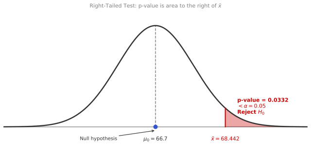
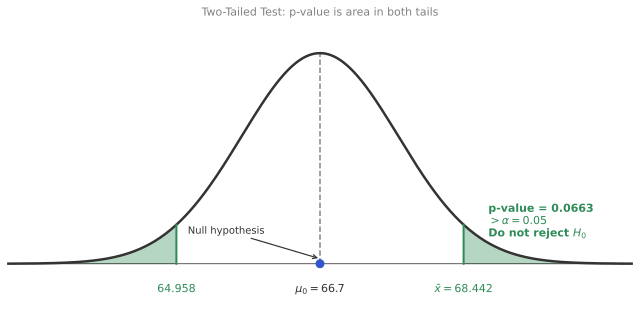
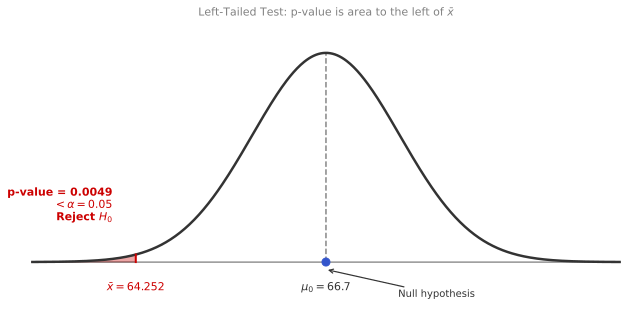
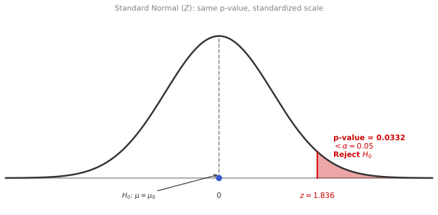
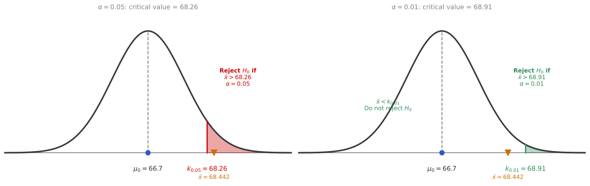
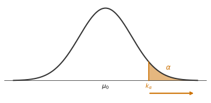
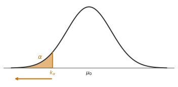
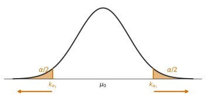
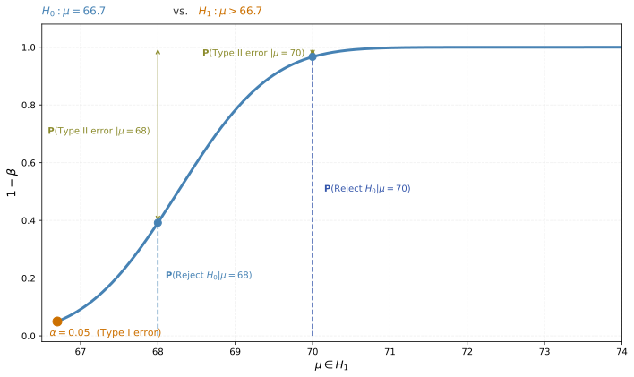
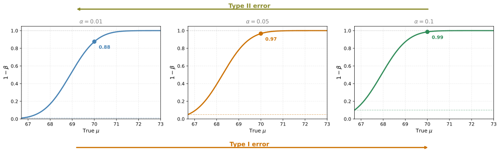

Hypothesis Testing
statistics
In the previous section on confidence intervals, you learned how to estimate a population parameter and build a range of plausible values around it. Now you will learn a complementary tool: hypothesis testing. The question shifts from “where is the true value?” to “is there enough evidence to reject a specific claim?”
A Note on Terminology
The word “hypothesis” has two different meanings in research. A research hypothesis is a conjecture about how a research problem might be resolved. It is an educated guess, a prediction based on theory or prior work. Its purpose is to guide the design of a study.
A statistical hypothesis (or null hypothesis) is something different entirely. It is a formal statement used during data analysis that postulates any observed result is due to chance alone. When we say “testing a hypothesis” in statistics, we mean testing the null hypothesis, not the research hypothesis.
In practice, the statistical hypothesis is often the opposite of the research hypothesis. You support your research hypothesis by showing that its negation (the null hypothesis) is probably not true. This is a backdoor approach, but it is the standard one because it is mathematically much easier to test for equivalence than to test for difference.
Spam Detector: Intuition
To understand hypothesis testing, start with a concrete example. Imagine you are building an email spam detector. The detector reads an incoming email and must decide: is this ham (a normal, good email) or spam?
Here is the key design decision. You cannot just say “I have no idea.” You need a starting point, a default assumption. And in this case, the default should be: the email is ham.
Why? Because the two types of mistakes are not equally bad. If you wrongly delete a good email, that is a serious problem. If you wrongly let a spam email into the inbox, that is annoying but recoverable. So you start from the safer assumption: the email is not spam.
This default assumption is called the null hypothesis, written as \(H_0\). In this example: \(H_0\): the email is ham.
The competing statement, the thing you are actually trying to detect, is called the alternative hypothesis, written as \(H_1\). Here: \(H_1\): the email is spam.
Now, the detector scans the email looking for evidence. If the email contains phrases like “earn extra cash,” “risk free,” “act immediately,” or “winner,” those are strong signals. This evidence is very unlikely to appear in a normal email. So the detector says: this is too suspicious to be ham. It rejects \(H_0\) and concludes the email is spam.
But here is what happens when the evidence is weak. Suppose the email has no trigger phrases, looks normal, comes from a known sender. The detector does not find strong evidence against the null hypothesis. So it does not reject \(H_0\). The email stays in the inbox.
Notice something important: not rejecting \(H_0\) does not mean you have proven the email is ham. It just means you did not find enough evidence to call it spam. This is a subtle but crucial distinction.
Null and Alternative Hypotheses
The spam example captures the structure of every hypothesis test. You always have two hypotheses:
The null hypothesis (\(H_0\)) is the baseline assumption. It represents the status quo, the “nothing unusual is happening” position. You assume it is true until you find strong evidence against it.
The alternative hypothesis (\(H_1\)) is the statement you are trying to establish. It is the interesting result, the thing you want to detect or prove. It competes with \(H_0\).
These two hypotheses must be mutually exclusive and together cover the full picture. The email is either ham or spam. It cannot be both.
Asymmetry of Conclusions
Here is the most important thing to understand about hypothesis testing. There is a fundamental asymmetry in what you can conclude.
If you find strong evidence against \(H_0\), you reject it and accept \(H_1\). This is a positive conclusion.
If you do not find strong enough evidence against \(H_0\), you fail to reject it. But this is not the same as proving \(H_0\) is true. You only know the evidence was not strong enough this time. Perhaps with more data, you would find something.
Think of it like a court trial. The verdict “not guilty” does not mean the defendant is definitely innocent. It means the prosecution did not present enough evidence to convict. The null hypothesis in a trial is innocence. You can reject it (guilty verdict) or fail to reject it (not guilty), but you can never prove innocence.
| Result | What it means |
|---|---|
| Reject \(H_0\) | Strong evidence against \(H_0\); accept \(H_1\) |
| Fail to reject \(H_0\) | Not enough evidence to overturn \(H_0\); does NOT confirm \(H_0\) is true |
Review Questions
1. In the spam detector example, why is “the email is ham” the null hypothesis rather than “the email is spam”?
TipAnswer
Because the cost of a wrong rejection is high. If you wrongly reject \(H_0\) (delete a good email), that is a serious mistake. The null hypothesis should be the safe default. You only overturn it when there is strong evidence, not by default.
2. An email arrives with no suspicious content. The spam detector does not find enough evidence to mark it as spam. What conclusion does the detector reach, and what does that conclusion actually mean?
TipAnswer
The detector fails to reject \(H_0\). It does not conclude the email is definitively ham. It only concludes there is not enough evidence to call it spam. The email goes to the inbox, but if more data were available (or the detector were more sophisticated), the conclusion might change.
3. A researcher says “we failed to reject \(H_0\), so \(H_0\) must be true.” What is wrong with this statement?
TipAnswer
Failing to reject \(H_0\) does not prove it is true. It only means the sample did not provide sufficient evidence against it. The null hypothesis could still be false, but the test lacked the power or data to detect it.
Type I and Type II Errors
Ideally, you would always make the right call. But the world is messy, you only have a sample, and randomness means you cannot guarantee a perfect decision every time. So what can go wrong?
When the spam detector makes a decision, there are two ways it can make a mistake.
The first kind of mistake is sending a perfectly good email to the spam box. Your friend sent you a message and the detector panicked at the word “winner” in the subject line. The email was ham, but you rejected \(H_0\) anyway. This is called a Type I error, also known as a false positive. It happens when you reject \(H_0\) even though \(H_0\) was actually true.
The second kind of mistake is letting a spam email through to your inbox. The email was carefully crafted to avoid trigger words, and the detector found no strong evidence. So it did not reject \(H_0\). But the email was spam all along. This is called a Type II error, also known as a false negative. It happens when you fail to reject \(H_0\) even though \(H_0\) was actually false.
Here is a table that lays out all the possible outcomes:
Notice something important: you can never actually know which row you are in. You do not know the ground truth. You are making a decision based on incomplete information, and you will sometimes be wrong.
Not All Errors Are Equal
These two errors do not have the same impact. Think about it from the email perspective. Would you rather occasionally see a spam email in your inbox, or occasionally lose a good email forever because the filter thought it was spam?
Most people would choose the first option. An unwanted email is annoying but not catastrophic. A lost email from your boss or a flight confirmation — that is a real problem.
This is why the null hypothesis was designed to protect against the more serious error. By defaulting to “the email is ham,” you make Type I errors more rare at the cost of letting more Type II errors through. The design of the test reflects what matters most to you.
Significance Level \(\alpha\)
So now the question becomes: how much are you willing to tolerate?
The significance level \(\alpha\) is the maximum probability of committing a Type I error that you are willing to accept. In other words, it is the maximum probability of rejecting \(H_0\) when \(H_0\) was actually true.
Since it is a probability, \(\alpha\) is between 0 and 1. Consider the two extremes. If you set \(\alpha = 0\), you never reject \(H_0\) no matter what. The detector never marks anything as spam. That is terrible — every spam email lands in your inbox. On the other end, if \(\alpha = 1\), every email gets marked as spam. That is also terrible — every good email disappears.
What you want is something in between, and typically you want \(\alpha\) to be small. Common choices are \(\alpha = 0.05\) (5%) or \(\alpha = 0.01\) (1%).
With \(\alpha = 0.05\), you are saying: “I am willing to incorrectly send a ham email to spam 5% of the time.” That is your design decision. The value of \(\alpha\) then determines a threshold for the test — it defines how much evidence you need before you are willing to reject \(H_0\).
There is one catch: if you push \(\alpha\) very close to 0 (trying to almost never make a Type I error), you end up making more Type II errors for the same number of samples. You become so cautious about calling anything spam that real spam keeps getting through. The two error types are in tension with each other.
Review Questions
4. A spam detector marks a legitimate email from your bank as spam and deletes it. What type of error is this, and which hypothesis was incorrectly rejected?
TipAnswer
This is a Type I error (false positive). The null hypothesis \(H_0\) (the email is ham) was true, but the detector rejected it. The email was good, but the test wrongly flagged it as spam.
5. A spam email advertising fake prizes slips into your inbox because the detector did not find enough evidence to flag it. What type of error is this?
TipAnswer
This is a Type II error (false negative). The alternative hypothesis \(H_1\) (the email is spam) was true, but the detector failed to reject \(H_0\). The spam email was treated as ham.
6. Why do Type I and Type II errors pull against each other when sample size is fixed?
TipAnswer
Making \(\alpha\) smaller (reducing Type I errors) means you require more evidence before rejecting \(H_0\). But with the same amount of data, this means you miss more true alternatives, increasing Type II errors. The only way to reduce both simultaneously is to collect more data.
7. A medical test for a disease is designed with a very low significance level \(\alpha = 0.001\). What does this mean in practice, and what is the tradeoff?
TipAnswer
With \(\alpha = 0.001\), the test will only declare a patient positive 0.1% of the time when they are actually healthy (very few false positives). The tradeoff is that many sick patients will be missed (high Type II error rate), because the test demands very strong evidence before it flags anyone as positive.
26. In statistical hypothesis testing, which of the following statements correctly defines Type I and Type II errors?
- Type I error occurs when we reject a null hypothesis that is true, while Type II error occurs when we accept a null hypothesis that is false.
- Type I error occurs when we accept a null hypothesis that is true, while Type II error occurs when we reject a null hypothesis that is false.
- Type I error occurs when we reject a null hypothesis that is false, while Type II error occurs when we accept a null hypothesis that is true.
- Type I error occurs when we accept a null hypothesis that is false, while Type II error occurs when we reject a null hypothesis that is true.
TipAnswer
a. A Type I error (false positive) is rejecting \(H_0\) when it is actually true. A Type II error (false negative) is failing to reject (accepting) \(H_0\) when it is actually false. Option b swaps the two. Options c and d describe correct decisions, not errors.
Hypothesis Testing for a Population Mean
Now that you understand the logic of hypothesis testing, let us apply it to something concrete: testing a claim about the average height of 18-year-olds in the US.
Setting Up the Problem
Imagine you have a sample of 10 heights (in inches) from current 18-year-olds:
\[ \bar{x} = 68.442 \text{ inches} \]
Historical data from the 1970s says the mean height of 18-year-olds was 66.7 inches. Based on your sample, can you confirm that the mean height has increased?
Your sample mean (68.442) is larger than 66.7. But is that enough to draw a conclusion? After all, random sampling always produces some variation. Maybe you just happened to pick taller people. You need a formal way to decide.
Data Quality Matters
Before doing any testing, the data must be reliable. Each sample should be representative of the population and completely randomized. If you took all your samples from basketball teams, you would introduce bias because basketball players tend to be taller. You also need enough data — a good rule of thumb is at least 30 samples (though in this example we will work with 10 to illustrate the concept).
Formulating Hypotheses
The baseline assumption is that nothing has changed: the population mean for current 18-year-olds is still 66.7 inches. The competing claim is that the mean has increased.
\[ H_0: \mu = 66.7 \qquad H_1: \mu > 66.7 \]
Notice that the hypotheses are always about the population parameter (\(\mu\)), never about the sample. You do not write \(\bar{x} > 66.7\) as a hypothesis. The hypotheses describe what might be true about the entire population.
Test Statistic
The decision will be based on your observations, specifically on the sample mean \(\bar{X}\). This is your test statistic — a function of the random samples that gives information about the population parameter you want to study.
The sample mean \(\bar{X}\) is a random variable (it changes depending on which people you sample). The specific value you computed, 68.442, is called the observed statistic. It is a single realization of that random variable based on your measurements.
In general, the choice of test statistic depends on what you are testing. If you are testing the population mean, the sample mean is a natural choice. If you are testing variance, the sample variance \(s^2\) would be appropriate.
Right-Tailed, Left-Tailed, and Two-Tailed Tests
Going back to the height example, there are actually three different questions you could ask when comparing the current population mean to the 1970s value of 66.7 inches. Each question leads to a different type of test.
Right-Tailed Test
Question: Has the average height increased over the last 50 years?
\[ H_0: \mu = 66.7 \qquad H_1: \mu > 66.7 \]
This is called a right-tailed test because the alternative hypothesis lies to the right of the null. You are looking for evidence that \(\mu\) is bigger than 66.7. If your sample mean is much greater than 66.7, you reject \(H_0\).
In this case:
- A Type I error means concluding the height increased when it actually stayed at 66.7.
- A Type II error means concluding nothing changed when the height actually did increase.
Left-Tailed Test
Question: Has the average height decreased over the last 50 years?
\[ H_0: \mu = 66.7 \qquad H_1: \mu < 66.7 \]
This is a left-tailed test because the alternative hypothesis lies to the left. You are looking for evidence that \(\mu\) is smaller than 66.7. If your sample mean is much less than 66.7, you reject \(H_0\).
In this case:
- A Type I error means concluding the height decreased when it actually stayed the same.
- A Type II error means concluding nothing changed when the height actually did decrease.
Two-Tailed Test
Question: Has the average height changed at all (in either direction)?
\[ H_0: \mu = 66.7 \qquad H_1: \mu \neq 66.7 \]
This is a two-tailed test because you care about deviations in both directions. You reject \(H_0\) when the sample mean deviates far from 66.7 in either direction. Since the difference can go either way, you look at the absolute value \(|\bar{x} - 66.7|\). If it is large, you reject.
In this case:
- A Type I error means concluding the height changed when it actually stayed the same.
- A Type II error means concluding nothing changed when the height actually did change.
Review Questions
8. A researcher believes that a new teaching method increases test scores. The historical average is 72. What are the null and alternative hypotheses, and what type of test is this?
TipAnswer
\(H_0: \mu = 72\), \(H_1: \mu > 72\). This is a right-tailed test because the researcher is looking for an increase (values to the right of 72).
9. A factory claims its machines produce bolts with a mean diameter of exactly 5.0 mm. A quality inspector wants to check whether the machines have drifted (in either direction). What type of test should the inspector use?
TipAnswer
A two-tailed test: \(H_0: \mu = 5.0\), \(H_1: \mu \neq 5.0\). The inspector does not know whether the drift is up or down, only that any change from 5.0 mm is a problem.
10. In the height example, you computed \(\bar{x} = 68.442\) and \(H_0: \mu = 66.7\). For a right-tailed test, what would make you reject \(H_0\)?
TipAnswer
You would reject \(H_0\) if the sample mean is sufficiently larger than 66.7 that the difference is unlikely to have occurred by chance alone. How large “sufficiently larger” means depends on the significance level \(\alpha\) and the variability of the data. You will learn the exact mechanics (p-values and critical values) in the next sections.
11. If \(H_0: \mu = 66.7\) and \(H_1: \mu < 66.7\) (a left-tailed test), which statement correctly identifies a Type I error and a Type II error?
- Type I error: Determining that \(\mu < 66.7\) when the population mean did not change. Type II error: Determining that \(\mu = 66.7\) when \(\mu < 66.7\) is true.
- Type I error: Determining that \(\mu < 66.7\) when \(\mu \geq 66.7\) is true. Type II error: Determining that \(\mu = 66.7\) when \(\mu \geq 66.7\) is true.
- Type I error: Determining that \(\mu = 66.7\) when \(\mu < 66.7\) is true. Type II error: Determining that \(\mu < 66.7\) when the population mean did not change.
TipAnswer
a. A Type I error means rejecting \(H_0\) when it is true: you conclude \(\mu < 66.7\) but the mean actually stayed at 66.7 (no change). A Type II error means failing to reject \(H_0\) when it is false: you conclude \(\mu = 66.7\) but in reality \(\mu < 66.7\). Option b incorrectly describes the Type II error (it says you conclude \(\mu = 66.7\) when \(\mu \geq 66.7\) is true, which would actually be a correct decision). Option c swaps the two errors.
p-Value
So far, the intuition is: if your sample mean falls too far from what the null hypothesis says, you reject \(H_0\). But what does “too far” mean exactly?
Setting Up the Distribution Under \(H_0\)
Go back to the height example. \(H_0\) says the population mean is 66.7 inches. Suppose the population standard deviation is \(\sigma = 3\) and your sample size is \(n = 10\). If \(H_0\) is true, then by the Central Limit Theorem, the sample mean follows a normal distribution:
\[ \bar{X} \sim \mathcal{N}\left(66.7,\; \frac{3^2}{10}\right) \]
Now you can ask: how likely was your observed sample mean of 68.442, assuming \(H_0\) is true? If it is very unlikely, that is grounds to reject \(H_0\).
Right-Tailed p-Value
For the right-tailed test (\(H_1: \mu > 66.7\)), you want to know: what is the probability of getting a sample mean as large or larger than 68.442, given that \(\mu\) is actually 66.7?
This probability is the shaded area to the right of 68.442 under the distribution of \(\bar{X}\) when \(H_0\) is true. That shaded area is called the p-value.
The p-value here is about 0.033. Since this is less than \(\alpha = 0.05\), you reject \(H_0\). Your sample mean of 68.442 is unlikely enough under \(H_0\) to conclude the height has increased.
Decision Rule
The p-value gives you a simple decision rule:
- If p-value \(< \alpha\): reject \(H_0\) (the evidence is strong enough).
- If p-value \(\geq \alpha\): fail to reject \(H_0\) (not enough evidence).
A small p-value means your sample landed in the tail of the distribution under \(H_0\). It would be pretty unlikely to see data this extreme if \(H_0\) were true. So you reject \(H_0\).
What p-Value Means for Each Test Type
The p-value always answers the same question: “assuming \(H_0\) is true, how extreme is my observed statistic?” But “extreme” means different things depending on the test:
- Right-tailed: p-value = \(P(\bar{X} > \bar{x}_{\text{obs}} \mid H_0)\) (area to the right)
- Left-tailed: p-value = \(P(\bar{X} < \bar{x}_{\text{obs}} \mid H_0)\) (area to the left)
- Two-tailed: p-value = \(P(|\bar{X} - \mu_0| > |\bar{x}_{\text{obs}} - \mu_0| \mid H_0)\) (area in both tails)
Two-Tailed p-Value Example
Now consider the two-tailed test with the same data. The question is: has the mean height changed at all (in either direction)?
\[ H_0: \mu = 66.7 \qquad H_1: \mu \neq 66.7 \]
Your sample mean is 68.442, which is 1.742 inches above 66.7. But in a two-tailed test, you care about deviations in both directions. So you also need to consider the mirror image: a sample mean that is 1.742 below 66.7, which would be \(66.7 - 1.742 = 64.958\).
The p-value is the probability that the sample mean lands at least 1.742 away from 66.7 in either direction, assuming \(H_0\) is true. That means you add up the area in both tails.

The p-value is 0.0663. Since \(0.0663 > 0.05\), you fail to reject \(H_0\) at the 5% significance level. In plain language: the sample mean is above 66.7, but not far enough above (in either direction) to conclude with 95% confidence that the mean has actually changed.
Notice this p-value is exactly twice the right-tailed p-value (0.033 × 2 = 0.066). That makes sense because you are now considering extreme values on both sides, not just one. Two-tailed tests are harder to reject because the “evidence bar” is split across two tails.
Left-Tailed p-Value Example
Now imagine a different sample. Instead of 68.442, suppose the observed mean was \(\bar{x} = 64.252\) (shorter than the historical 66.7). You want to test whether the average height has decreased:
\[ H_0: \mu = 66.7 \qquad H_1: \mu < 66.7 \]
The p-value for a left-tailed test is the probability of getting a sample mean as small or smaller than 64.252, given that \(\mu\) is actually 66.7. That is the area to the left of 64.252.

The p-value is 0.0049. That is much smaller than \(\alpha = 0.05\). In fact, it is even smaller than 0.01, meaning you would reject \(H_0\) even with a more conservative significance level. The conclusion: the average height has decreased over the last 50 years (based on this hypothetical sample).
Notice how different the conclusion is compared to the right-tailed test. With \(\bar{x} = 68.442\) (above 66.7), you rejected \(H_0\) for the right-tailed test. With \(\bar{x} = 64.252\) (below 66.7), you reject \(H_0\) for the left-tailed test. The direction of the alternative hypothesis determines which tail you look at.
z-Statistic (Standardized Approach)
Instead of working with \(\bar{X}\) directly, you can standardize it:
\[ z = \frac{\bar{x} - \mu_0}{\sigma / \sqrt{n}} = \frac{68.442 - 66.7}{3 / \sqrt{10}} = \frac{1.742}{0.949} = 1.836 \]
This transforms the problem to the standard normal distribution \(\mathcal{N}(0, 1)\). The p-value for the right-tailed test is \(P(Z > 1.836)\), which gives the same result (0.033). The z-statistic is just a convenient way to compute p-values using the standard normal table.

Review Questions
12. You compute a p-value of 0.03 for a right-tailed test with \(\alpha = 0.05\). What do you conclude?
TipAnswer
Since \(0.03 < 0.05\), you reject \(H_0\). The observed data is unlikely enough under \(H_0\) to conclude the alternative hypothesis is supported.
13. A two-tailed test gives a p-value of 0.08 with \(\alpha = 0.05\). What is your conclusion? Would it change if you used \(\alpha = 0.10\)?
TipAnswer
At \(\alpha = 0.05\): fail to reject \(H_0\) (0.08 > 0.05). At \(\alpha = 0.10\): reject \(H_0\) (0.08 < 0.10). The conclusion depends on the significance level you chose before running the test.
14. Why is the two-tailed p-value exactly twice the one-tailed p-value for the same observed statistic?
TipAnswer
Because the two-tailed test considers extreme values in both directions. For a symmetric distribution, the probability of being more than \(d\) above \(\mu_0\) equals the probability of being more than \(d\) below \(\mu_0\). Adding both tails doubles the one-tailed p-value.
15. Which of the following statements about the p-value is true?
- If the p-value is less than \(\alpha\) (significance level), then you reject the null hypothesis.
- The p-value represents the probability of observing the data or more extreme results under the assumption that the null hypothesis is true.
- A smaller p-value indicates stronger evidence against the null hypothesis.
- All of the above.
TipAnswer
d. All three statements are correct. Statement a is the decision rule. Statement b is the formal definition of the p-value. Statement c follows from the definition: a smaller p-value means the observed data would be even more unlikely under \(H_0\), which is stronger evidence that \(H_0\) is wrong.
Critical Values
You just learned to make decisions using the p-value: compute it, compare to \(\alpha\), and reject \(H_0\) if the p-value is smaller. But there is another way to think about the same decision that is sometimes more intuitive. Instead of asking “what is the p-value of my observed data?”, you can ask: what is the most extreme sample I could get and still reject \(H_0\)?
That boundary sample, the one whose p-value is exactly \(\alpha\), defines the critical value. Anything more extreme than the critical value will automatically have a p-value less than \(\alpha\), so you reject. Anything less extreme will not.
Finding the Critical Value
Go back to the height example one more time. \(H_0: \mu = 66.7\), \(H_1: \mu > 66.7\) (right-tailed), \(n = 10\), \(\sigma = 3\), \(\alpha = 0.05\).
Under \(H_0\), the sample mean follows \(\mathcal{N}(66.7, \; 3^2/10)\). The critical value \(k_{0.05}\) is the value that leaves an area of exactly 0.05 to its right. That is just the 95th percentile (quantile \(1 - \alpha\)) of this distribution.
For this distribution, \(k_{0.05} = 68.26\).

Decision Rule
Now you have a simple rule you can write down before collecting any data:
Reject \(H_0\) if the observed sample mean \(\bar{x} > k_\alpha\)
With \(\alpha = 0.05\): the critical value is 68.26. Your observed mean is 68.442, which is greater. So you reject \(H_0\). Same conclusion as the p-value method.
With \(\alpha = 0.01\): the critical value shifts to the right (68.91). Now your observed 68.442 is less than 68.91. You cannot reject \(H_0\) at this stricter significance level. A smaller \(\alpha\) demands stronger evidence, which pushes the critical value further into the tail.
The cool thing about critical values is that you know the decision boundary in advance. You do not need to compute a p-value. Once you have data, just compare the observed statistic to the critical value and make your call.
Critical Values for Each Test Type
The idea is the same for all three types of tests. What changes is where the rejection region sits:
Right-tailed test
\(H_0: \mu = \mu_0\) vs. \(H_1: \mu > \mu_0\)
Decision rule: Reject \(H_0\) if \(t > k_\alpha\)
\(k_\alpha\) is the quantile \(1 - \alpha\)

Left-tailed test
\(H_0: \mu = \mu_0\) vs. \(H_1: \mu < \mu_0\)
Decision rule: Reject \(H_0\) if \(t < k_\alpha\)
\(k_\alpha\) is the quantile \(\alpha\)

Two-tailed test
\(H_0: \mu = \mu_0\) vs. \(H_1: \mu \neq \mu_0\)
Decision rule: Reject \(H_0\) if \(t > k_{\alpha_1}\) or \(t < k_{\alpha_2}\)
\(k_{\alpha_1}\) is the quantile \(1 - \frac{\alpha}{2}\), and \(k_{\alpha_2}\) is the quantile \(\frac{\alpha}{2}\)

For the two-tailed test, the total \(\alpha\) is split between both tails (\(\alpha/2\) each), so you get two critical values.
p-Value Method vs Critical Value Method
These are not two different tests. They are two different ways of arriving at the exact same conclusion. The p-value method computes a number from the data and compares it to \(\alpha\). The critical value method computes a threshold from \(\alpha\) and compares the data to it. Both always agree.
The advantage of critical values is that you can define your decision rule before collecting data, which is important for designing experiments and for computing Type II error probabilities (coming in the next section).
Review Questions
16. For the height example (\(\mu_0 = 66.7\), \(\sigma = 3\), \(n = 10\)), you compute the critical value at \(\alpha = 0.05\) to be 68.26. If your observed sample mean is 67.5, do you reject \(H_0\)?
TipAnswer
No. Since \(67.5 < 68.26\), the observed mean does not exceed the critical value. You fail to reject \(H_0\). The sample is not extreme enough to conclude the mean has increased.
17. Why does a smaller \(\alpha\) push the critical value further into the tail?
TipAnswer
A smaller \(\alpha\) means you tolerate fewer Type I errors, so you demand stronger evidence before rejecting \(H_0\). “Stronger evidence” means the sample mean must be further from \(\mu_0\). The critical value moves further into the tail to ensure only very extreme samples trigger rejection.
18. A researcher uses the p-value method and gets p = 0.03. Another researcher uses the critical value method with the same data and \(\alpha = 0.05\). Will they reach the same conclusion?
TipAnswer
Yes, always. Both methods are mathematically equivalent. Since \(p = 0.03 < 0.05 = \alpha\), the p-value method rejects \(H_0\). The critical value method will also reject because the observed statistic must be more extreme than the critical value (which is what produces a p-value less than \(\alpha\)).
19. If the significance level \(\alpha\) in a hypothesis test is changed from 0.05 to 0.01, what will happen to the critical value?
- The critical value increases.
- The critical value decreases.
- The critical value remains unchanged.
TipAnswer
a. Changing \(\alpha\) from 0.05 to 0.01 increases the critical value (for a right-tailed test). A smaller \(\alpha\) means you require stronger evidence to reject \(H_0\), so the threshold moves further into the tail. You need a more extreme sample mean to cross it.
28. Suppose you are conducting a hypothesis test to determine whether a new teaching method improves student performance. The null hypothesis (\(H_0\)) states that the teaching method has no effect, while the alternative hypothesis (\(H_1\)) suggests that the teaching method leads to higher student performance. You collect data from a sample of 50 students and calculate a test statistic of 1.98. The critical value at a significance level of 0.05 is 1.96. Should you reject the null hypothesis?
- Yes, you reject the null hypothesis.
- No, you do not reject the null hypothesis.
TipAnswer
a. The decision rule for a right-tailed test is: reject \(H_0\) if the test statistic exceeds the critical value. Here \(1.98 > 1.96\), so the test statistic falls in the rejection region. You reject \(H_0\) and conclude there is sufficient evidence that the teaching method improves performance.
Power of a Test
So far you have been focused on Type I errors through the significance level \(\alpha\). Now consider the other side: what is the probability of making the right decision when \(H_0\) is actually false?
Type II Error Probability (\(\beta\))
Go back to the height example. Your decision rule (at \(\alpha = 0.05\)) is: reject \(H_0\) if \(\bar{x} > 68.26\). Now suppose the true population mean is actually \(\mu = 70\) (so \(H_0\) is false). What is the probability that you fail to reject \(H_0\) anyway?
If \(\mu = 70\), the sample mean follows \(\mathcal{N}(70, \; 3^2/10)\). The probability of not rejecting is the probability that \(\bar{x} < 68.26\) under this distribution. That probability turns out to be about 0.033. This is \(\beta\), the probability of a Type II error when \(\mu = 70\).
Notice that \(\beta\) depends on the true value of \(\mu\). If \(\mu = 67\) (barely above 66.7), the Type II error probability is very high because the two distributions (under \(H_0\) and the true \(\mu\)) overlap heavily. If \(\mu = 75\) (way above 66.7), \(\beta\) is nearly zero because the distributions barely overlap.
Power of the test = \(1 - \beta\)
The power of the test is the probability of making the correct decision when \(H_0\) is false:
\[ \text{Power}(\mu) = 1 - \beta(\mu) = P(\text{reject } H_0 \mid \mu \text{ is the true value}) \]
Higher power means you are better at detecting a real effect. The power depends on:
- How far the true \(\mu\) is from \(\mu_0\) (farther = easier to detect = higher power)
- The significance level \(\alpha\) (larger \(\alpha\) = higher power, but more Type I errors)
- The sample size \(n\) (larger \(n\) = higher power)

The power curve shows how the probability of correctly rejecting \(H_0\) increases as the true \(\mu\) moves further from 66.7. At \(\mu_0 = 66.7\) the curve starts at \(\alpha = 0.05\) (the Type I error rate). The vertical gaps between the curve and 1.0 represent the Type II error probability \(\beta\) at each value of \(\mu\).
Now let us see how the power curve changes for different values of \(\alpha\). As \(\alpha\) increases, the power increases for every value of \(\mu\). This is the fundamental tradeoff: more power to detect real effects, but more Type I errors.

From left to right, \(\alpha\) increases. At \(\mu = 70\): the power is 0.88 for \(\alpha = 0.01\), 0.97 for \(\alpha = 0.05\), and 0.99 for \(\alpha = 0.10\). A larger \(\alpha\) gives you more power, but at the cost of more Type I errors. For a fixed sample size, there is always this tradeoff. The only way to reduce both errors simultaneously is to increase the sample size.
Tradeoff Summary
For a fixed sample size, there is always a tradeoff between Type I and Type II errors. You cannot reduce both simultaneously. However, if you can increase the sample size, you can reduce both errors at the same time (the power curve shifts upward while keeping \(\alpha\) fixed).
Increasing Statistical Power
Beyond increasing the sample size, there are other practical strategies to increase the power of a test (that is, to reduce the chance of a Type II error):
Use a larger sample size. The larger the sample, the less the statistics you compute will diverge from the actual population parameters. This is the single most effective way to increase power.
Maximize the validity and reliability of your measurements. Measures with high validity and reliability reduce noise, making it easier to detect a real effect. If your measurement tool is imprecise, the additional variability makes it harder to distinguish a true signal from random fluctuation.
Use parametric rather than nonparametric statistics when assumptions are met. Nonparametric procedures are generally less powerful than parametric ones, meaning they require larger samples to achieve the same ability to reject a false null hypothesis. When your data meet the assumptions for parametric tests (such as normality), prefer them.
The Multiple Testing Problem
When you test more than one statistical hypothesis in a study, the probability of making at least one Type I error increases. Suppose you set \(\alpha = 0.05\) and run 20 independent tests. Even if every null hypothesis is true, the probability of making at least one Type I error is:
\[ P(\text{at least one Type I error}) = 1 - (1 - \alpha)^n = 1 - (0.95)^{20} \approx 0.64 \]
That is a 64% chance of at least one false positive across 20 tests. This is why researchers who run many tests must apply corrections (such as the Bonferroni correction, which divides \(\alpha\) by the number of tests) or use other methods to control the overall error rate.
Review Questions
20. If the true population mean is \(\mu = 70\) and the power of the test is 0.85, what is the probability of a Type II error?
TipAnswer
\(\beta = 1 - \text{Power} = 1 - 0.85 = 0.15\). There is a 15% chance of failing to reject \(H_0\) when the true mean is 70.
21. Why does the power curve increase as the true \(\mu\) moves further from \(\mu_0\)?
TipAnswer
Because when \(\mu\) is far from \(\mu_0\), the sampling distribution under the true \(\mu\) barely overlaps with the critical value determined by \(H_0\). Almost all samples will exceed the critical value, so the probability of correctly rejecting \(H_0\) approaches 1.
22. A researcher wants to increase the power of a test without changing \(\alpha\). What should they do?
TipAnswer
Increase the sample size \(n\). A larger sample reduces the standard error, making the sampling distribution narrower. This reduces the overlap between the distributions under \(H_0\) and under the true \(\mu\), increasing the probability of correctly rejecting \(H_0\).
Interpreting Results
To wrap up hypothesis testing, let us walk through the full process step by step, then address some common misconceptions.
Steps of Hypothesis Testing
Step 1: State your hypotheses.
Define the null hypothesis (your baseline) and the alternative hypothesis (what you want to prove). For the height example:
\[ H_0: \mu = 66.7 \qquad H_1: \mu > 66.7 \]
Step 2: Design the test.
Choose your test statistic (for example, the sample mean \(\bar{X}\)) and set the significance level. The most common value is \(\alpha = 0.05\). Remember, \(\alpha\) is the maximum probability of making a Type I error, and it should always be small.
Step 3: Compute the observed statistic.
Collect your data and compute the test statistic. In the height example, the observed sample mean was 68.442.
Step 4: Make your decision.
Compare your observed statistic to the critical value, or compute the p-value and compare it to \(\alpha\). If the p-value is smaller than \(\alpha\), reject \(H_0\) and accept \(H_1\).
Common Misconceptions
Reaching a conclusion is not as simple as it seems, and people often make mistakes. Here are the most important ones to avoid.
Misconception 1: “The p-value is the probability that \(H_0\) is true.”
This is false. A small p-value does not tell you the probability that \(H_0\) is true or false. The p-value is the probability of seeing data as extreme as yours by chance, assuming \(H_0\) is true. A small p-value tells you that \(H_0\) is not a good model for your data because the chances of observing what you observed are small under \(H_0\).
Misconception 2: “Not rejecting \(H_0\) means \(H_0\) is true.”
Also false. Remember the spam email example: when you do not reject \(H_0\), you do not say the email is definitely ham. The most you can say is that there was not enough evidence to show the email was spam. The same principle applies to every hypothesis test. Failing to reject \(H_0\) means the evidence was not strong enough, not that \(H_0\) is correct.
Misconception 3: “A statistically significant result means the effect is large or important.”
Not necessarily. With a large enough sample, you can detect tiny, practically meaningless differences. A drug that reduces headache duration by 0.3 seconds might yield p = 0.001 with 10,000 participants. The result is statistically significant but practically useless. Always consider the magnitude of the effect alongside the p-value.
Misconception 4: “You can choose \(\alpha\) after seeing the data.”
No. The significance level must be decided before looking at the results. Adjusting \(\alpha\) after seeing the data to get the answer you want is called p-hacking and is considered bad scientific practice.
What to Report
When writing up results, always report:
- The p-value (not just “significant” or “not significant”)
- The sample size
- The observed statistic and effect size
- The chosen significance level \(\alpha\)
This gives readers enough information to draw their own conclusions.
Review Questions
23. A researcher runs a test and gets p = 0.048 with \(\alpha = 0.05\). They report “the result is statistically significant.” Another researcher replicates the study and gets p = 0.052. They report “no significant effect found.” Is there really a meaningful difference between these two results?
TipAnswer
No. The difference between p = 0.048 and p = 0.052 is trivial. Both are borderline. The sharp cutoff at \(\alpha = 0.05\) is a convention, not a law of nature. This is why reporting the actual p-value is more informative than just “significant” or “not significant.”
24. A study with 10,000 participants finds that a new drug reduces headache duration by 0.3 seconds (p = 0.001). Should you be impressed?
TipAnswer
The result is statistically significant (p = 0.001 is very small), but practically meaningless. A reduction of 0.3 seconds has no real-world value. The very large sample size made it possible to detect an effect that is too tiny to matter. Statistical significance and practical significance are different things.
25. Your friend says: “I ran a hypothesis test and failed to reject \(H_0\). This proves my null hypothesis is correct.” What would you tell them?
TipAnswer
Failing to reject \(H_0\) does not prove it is true. It only means the data did not provide strong enough evidence against it. Perhaps the sample was too small, or the true effect is subtle. Absence of evidence is not evidence of absence. The most you can say is: “We did not find sufficient evidence to reject \(H_0\).”
27. When conducting a hypothesis test, after defining the null hypothesis (\(H_0\)) and the alternative hypothesis (\(H_1\)), what are the general steps to decide whether to reject the null hypothesis? Select the correct sequence of steps.
- Set the significance level (\(\alpha\)), calculate the test statistic based on sample data, calculate the p-value, compare the p-value with the significance level, and make a decision to reject or fail to reject (\(H_0\)).
- Calculate the test statistic, determine the significance level (\(\alpha\)), calculate the p-value, compare the p-value with the significance level, and make a decision on the null hypothesis.
- Calculate the p-value based on the test statistic, set the significance level (\(\alpha\)), compare the p-value with the significance level, and decide on the null hypothesis.
TipAnswer
a. The significance level \(\alpha\) must be set before looking at the data (to avoid p-hacking). Then you compute the test statistic from your sample, derive the p-value from the test statistic, and compare it to \(\alpha\) to make your decision. Options b and c put the significance level after the test statistic, which is methodologically incorrect.
29. You notice that your six-sided die seems to favor the outcome six. You state the null hypothesis is that the die is fair, and the alternative hypothesis is that the die favors some outcomes. After conducting a hypothesis test by rolling the die 100 times, you determine that the p-value is 0.03. Which of the following conclusions is a correct interpretation of the p-value?
- The probability of rolling the die and getting a six is 97%.
- The chance that the die is fair is 3%.
- The chance of producing the observed results (a fair die) is 3%.
- The chance that the die is unfair is 3%.
TipAnswer
c. The p-value is the probability of observing results as extreme as (or more extreme than) what you got, assuming \(H_0\) is true (the die is fair). It is NOT the probability that \(H_0\) is true (option b) or false (option d). Option a is unrelated to the p-value definition.
Summary
| Concept | Description |
|---|---|
| Null hypothesis (\(H_0\)) | Baseline assumption (nothing unusual is happening) |
| Alternative hypothesis (\(H_1\)) | The statement you want to prove |
| Type I error | Rejecting \(H_0\) when it was actually true (false positive) |
| Type II error | Failing to reject \(H_0\) when it was actually false (false negative) |
| Significance level (\(\alpha\)) | Maximum probability of Type I error (typically 0.05) |
| Test statistic | A function of the sample data (e.g., \(\bar{X}\)) used to make the decision |
| p-value | Probability of observing data this extreme by chance, assuming \(H_0\) is true |
| Decision rule (p-value) | Reject \(H_0\) if p-value \(< \alpha\) |
| Critical value (\(k_\alpha\)) | The threshold beyond which you reject \(H_0\) |
| Decision rule (critical value) | Reject \(H_0\) if observed statistic exceeds \(k_\alpha\) |
| Power (\(1 - \beta\)) | Probability of correctly rejecting \(H_0\) when it is false |
| p-value misconception | The p-value is NOT the probability that \(H_0\) is true |
| Failing to reject misconception | Failing to reject \(H_0\) does NOT prove \(H_0\) is true |